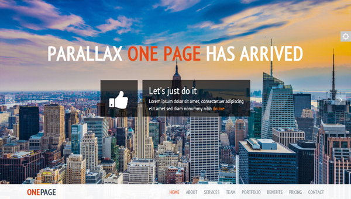
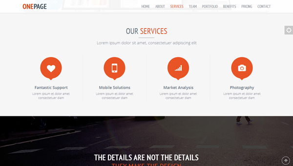
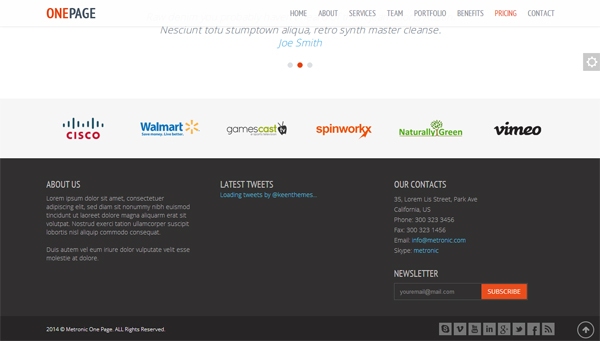

Documentation v3.6.2
If you have any questions that are beyond the scope of this help file, please email our support support@keenthemes.com.
Table of Contents: |
All template files have fixed structure consisting of header, promo-block, content and footer as shown below:



Below code is used at the beginning of all HTML pages to detect Internet Explorer browser version and set a spesific class applied to Internet Explorer versions.
<!DOCTYPE html> <!-- Template Name: Metronic - Responsive Admin Dashboard Template build with Twitter Bootstrap 3.2.0 Version: 3.1 Author: KeenThemes Website: http://www.keenthemes.com/ Contact: support@keenthemes.com Follow: www.twitter.com/keenthemes Like: www.facebook.com/keenthemes Purchase: http://themeforest.net/item/metronic-responsive-admin-dashboard-template/4021469?ref=keenthemes License: You must have a valid license purchased only from themeforest (the above link) in order to legally use the theme for your project. --> <!--[if IE 8]> <html lang="en" class="ie8 no-js"> <![endif]--> <!--[if IE 9]> <html lang="en" class="ie9 no-js"> <![endif]--> <!--[if !IE]><!-->
Page head contains metadata, javascript and css files:
<!-- Head BEGIN --> <head> <meta charset="utf-8"> <title>Metronic One Page</title> <meta content="width=device-width, initial-scale=1.0" name="viewport"> <meta http-equiv="X-UA-Compatible" content="IE=edge,chrome=1"> <meta content="Metronic Shop UI description" name="description"> <meta content="Metronic Shop UI keywords" name="keywords"> <meta content="keenthemes" name="author"> <meta http-equiv="cleartype" content="on"> <meta property="og:site_name" content="-CUSTOMER VALUE-"> <meta property="og:title" content="-CUSTOMER VALUE-"> <meta property="og:description" content="-CUSTOMER VALUE-"> <meta property="og:type" content="website"> <meta property="og:image" content="-CUSTOMER VALUE-"><!-- link to image for socio --> <meta property="og:url" content="-CUSTOMER VALUE-"> <link rel="shortcut icon" href="favicon.ico"> <!-- Fonts START --> <link href="http://fonts.googleapis.com/css?family=Open+Sans:300,400,600,700|Pathway+Gothic+One|PT+Sans+Narrow:400+700|Source+Sans+Pro:200,300,400,600,700,900&subset=all" rel="stylesheet" type="text/css"> <!-- Fonts END --> <!-- Global styles BEGIN --> <link href="../../assets/global/plugins/bootstrap/css/bootstrap.css" rel="stylesheet"> <link href="../../assets/global/plugins/font-awesome/css/font-awesome.min.css" rel="stylesheet"> <link href="../../assets/global/plugins/slider-revolution-slider/rs-plugin/css/settings.css" rel="stylesheet"> <!-- Global styles END --> <!-- Page level plugin styles BEGIN --> <link href="../../assets/global/plugins/fancybox/source/jquery.fancybox.css" rel="stylesheet"> <!-- Page level plugin styles END --> <!-- Theme styles BEGIN --> <link href="../../assets/global/css/components.css" rel="stylesheet"> <link href="../../assets/frontend/onepage/css/style.css" rel="stylesheet"> <link href="../../assets/frontend/onepage/css/style-responsive.css" rel="stylesheet"> <link href="../../assets/frontend/onepage/css/themes/red.css" rel="stylesheet" id="style-color"> <link href="../../assets/frontend/onepage/css/custom.css" rel="stylesheet"> <!-- Theme styles END --> </head>
Header contains of logo and top menu bar and it used in all pages. HTML code of header container shown below:
<!-- Header BEGIN -->
<div class="header header-mobi-ext">
<div class="container">
<div class="row">
<!-- Logo BEGIN -->
<div class="col-md-1 col-sm-1">
</div>
<!-- Logo END -->
<a href="javascript:void(0);" class="mobi-toggler"><i class="fa fa-bars"></i></a>
<!-- Navigation BEGIN -->
<div class="col-md-11 pull-right">
<ul class="header-navigation">
</ul>
</div>
<!-- Navigation END -->
</div>
</div>
</div>
<!-- Header END -->
Revoluton Slider
<!-- Promo block BEGIN --> <div class="promo-block" id="promo-block"> <div class="tp-banner-container"> <div class="tp-banner" > <ul> </ul> </div> </div> </div> <!-- Promo block END -->
Content consists of page title, breadcrumbs and page's main body. HTML code of Content container as shown below:
<!-- About block BEGIN -->
<div class="about-block content content-center" id="about">
<div class="container">
</div>
</div>
<!-- About block END -->
<!-- BEGIN FOOTER -->
<div class="footer">
<div class="container">
</div>
</div>
<!-- END FOOTER -->
Javascript files loaded in the end of page. This will reduce page load time.
<!--[if lt IE 9]>
<script src="../../assets/global/plugins/respond.min.js"></script>
<![endif]-->
<!-- Load JavaScripts at the bottom, because it will reduce page load time -->
<!-- Core plugins BEGIN (For ALL pages) -->
<script src="../../assets/global/plugins/jquery-1.11.0.min.js" type="text/javascript"></script>
<script src="../../assets/global/plugins/jquery-migrate-1.2.1.min.js" type="text/javascript"></script>
<script src="../../assets/global/plugins/bootstrap/js/bootstrap.min.js" type="text/javascript"></script>
<!-- Core plugins END (For ALL pages) -->
<!-- BEGIN RevolutionSlider -->
<script src="../../assets/global/plugins/slider-revolution-slider/rs-plugin/js/jquery.themepunch.plugins.min.js" type="text/javascript"></script>
<script src="../../assets/global/plugins/slider-revolution-slider/rs-plugin/js/jquery.themepunch.revolution.min.js" type="text/javascript"></script>
<script src="../../assets/frontend/onepage/scripts/revo-ini.js" type="text/javascript"></script>
<!-- END RevolutionSlider -->
<!-- Core plugins BEGIN (required only for current page) -->
<script src="../../assets/global/plugins/fancybox/source/jquery.fancybox.pack.js" type="text/javascript"></script><!-- pop up -->
<script src="../../assets/global/plugins/jquery.easing.js"></script>
<script src="../../assets/global/plugins/jquery.parallax.js"></script>
<script src="../../assets/global/plugins/jquery.scrollTo.min.js"></script>
<script src="../../assets/global/plugins/jquery.nav.js"></script>
<!--<script src="../../assets/global/plugins/counter/waypoints.min.js"></script>
<script src="../../assets/global/plugins/counter/jquery.counterup.min.js"></script>-->
<!-- Core plugins END (required only for current page) -->
<!-- Global js BEGIN -->
<script src="../../assets/frontend/onepage/scripts/layout.js" type="text/javascript"></script>
<script>
$(document).ready(function() {
Layout.init();
});
</script>
<!-- Global js END -->
Metronic One Page uses Open Sans, Pathway Gothic One, PT Sans Narrow & Source Sans Pro font from google fonts.
<!-- Fonts START -->
<link href="http://fonts.googleapis.com/css?family=Open+Sans:300,400,600,700|Pathway+Gothic+One|PT+Sans+Narrow:400+700|Source+Sans+Pro:200,300,400,600,700,900&subset=all" rel="stylesheet" type="text/css">
<!-- Fonts END -->
Core javascript initialization implemented in assets/frontend/layout/scripts/layout.js thorugh Layout object as shown below.
This approach enables an easy modular implementation to initialize jquery plugins and other application logics.
var Layout = function () {
var localVariable; //local variable
var sampleFunction = function() {
//sample function code
}
return {
//main method to initiate template pages
init: function () {
sampleFunction() // call local function
},
//sample method declaration
sampleMethod: function (test)
{
alert(test);
}
};
}();
To overide the theme CSS styles you can use assets/frontend/layout/css/custom.css for your own customization. This will make the future updates easier if you keep your own CSS code seperate.
Metronic Frontennd based on Twitter Bootstrap
<link href="assets/global/plugins/bootstrap/css/bootstrap.min.css" rel="stylesheet" type="text/css"/>
<script src="assets/global/plugins/bootstrap/js/bootstrap.min.js" type="text/javascript"></script>
Turn simple HTML markup into a responsive or fullwidth slider with must-see-effects and meanwhile keep or build your SEO optimization.
<link rel="stylesheet" href="assets/global/plugins/revolution_slider/css/rs-style.css" media="screen"> <link rel="stylesheet" href="assets/global/plugins/revolution_slider/rs-plugin/css/settings.css" media="screen">
<script type="text/javascript" src="assets/global/plugins/revolution_slider/rs-plugin/js/jquery.themepunch.revolution.min.js"></script> <script type="text/javascript" src="assets/global/plugins/revolution_slider/rs-plugin/js/jquery.themepunch.tools.min.js"></script>
Please kindly find documentation for Revolution Slider in downloaded pack
Parallax Engine that reacts to the orientation of a smart device
<script src="../../assets/global/plugins/jquery.parallax.js"></script>
https://github.com/wagerfield/parallax
<script src="../../assets/global/plugins/jquery.scrollTo.min.js"></script>
https://github.com/flesler/jquery.scrollTo
Minimalistic form elements with jQuery
<link href="assets/global/plugins/uniform/css/uniform.default.css" rel="stylesheet" type="text/css"/>
<link href="assets/global/plugins/uniform/jquery.uniform.min.js" rel="stylesheet" type="text/css"/>
Metornic uses Open Sans web font from google fonts: http://fonts.googleapis.com/css?family=Open+Sans:400,300,600,700
@import url(http://fonts.googleapis.com/css?family=Open+Sans:400,300,600,700);
Below is the list of all plugins and external resources used to power this template.
| Name | Description | URL |
|---|---|---|
| jQuery 1.11.2 | Core Javascript library | http://www.jquery.com |
| Twitter Bootstrap v3.3.2 | Sleek, intuitive, and powerful front-end framework for faster and easier web development | http://getbootstrap.com |
| Revolution Slider | Turn simple HTML markup into a responsive or fullwidth slider with must-see-effects and meanwhile keep or build your SEO optimization. | http://uniformjs.com/ |
| Uniform | Uniform masks your standard form controls with custom themed controls. It works in sync with your real form elements to ensure accessibility and compatibility | Revolution Slider on CodeCanyon |
| Open Sans | Metornic Frontend uses Open Sans web font from google fonts: http://fonts.googleapis.com/css?family=Open+Sans:400,300,600,700 | http://www.google.com/webfonts |
assets/global/plugins/bootstrap/assets/global/plugins/font-awesome/assets/global/plugins/jquery.min.jsassets/global/plugins/slider-revolution-slider/assets/frontend/onepage/css/style.cssassets/frontend/onepage/css/style-responsive.cssassets/frontend/onepage/css/style.cssassets/frontend/onepage/css/style-responsive.cssassets/global/plugins/bootstrap/assets/global/plugins/bootstrap/assets/global/plugins/slider-revolution-slider/assets/global/plugins/jquery.min.jsassets/global/plugins/jquery.min.mapassets/global/plugins/jquery-migrate.minassets/global/plugins/font-awesome/assets/frontend/onepage/css/style.cssassets/frontend/onepage/css/style-responsive.cssassets/frontend/onepage/css/style.cssassets/frontend/onepage/css/style-responsive.cssassets/global/plugins/slider-revolution-slider/templates/frontend/onepage-index.htmltemplates/assets/onepage/css/style.csstemplates/assets/onepage/scripts/layout.jsassets/global/plugins/slider-revolution-slider/templates/frontend/onepage-index.htmlassets/global/plugins/bootstrap/all html filesassets/frontend/onepage/css/style.cssJust replace the assets folder and refer to the above changelog.
Once again, thanks for purchasing Metronic. We hope you will enjoy using it for your next project.